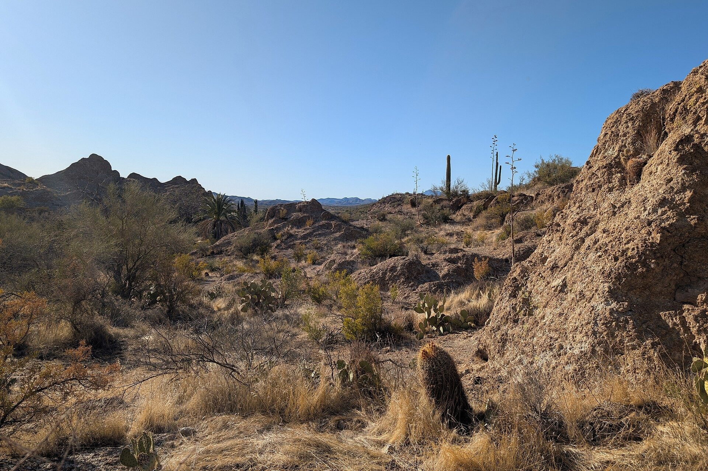
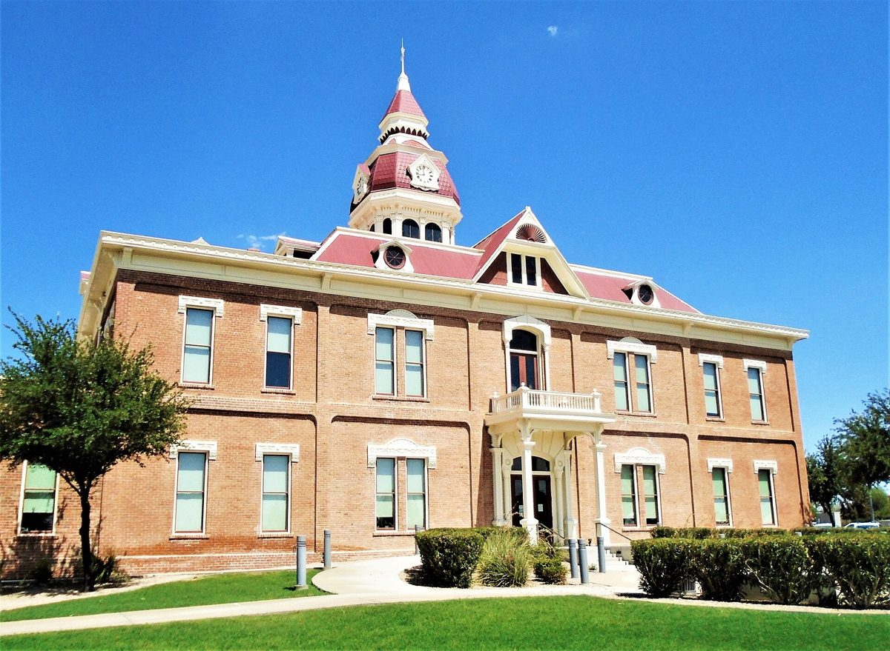

⛏Copper country
Winkelman's rivers and smelter town, then the Ray mine near Kearny: a huge open pit with one of the largest copper reserves in the country.
A working mine: look from the highway only. A public overlook is not confirmed.

1 day · from Tucson
Around the back of the Catalinas to copper country, a world of desert plants, and an old courthouse town.
Why go
A full circle with hardly a mile of freeway: up the back side of the Catalinas, down the San Pedro and along the Gila past one of the country's great copper pits, then a long lunchtime among the cactus and eucalyptus of Arizona's oldest botanical garden, and home on the Pinal Pioneer Parkway.
The whole trip

Scroll or pinch to zoom; tap a pin for the stop. On the map: day 1 in orange. Routes © OpenStreetMap contributors.
Day 1
215 mi · about 4½ h of driving
Tucson to Superior · 108 mi
Winkelman's rivers and smelter town, then the Ray mine near Kearny: a huge open pit with one of the largest copper reserves in the country.
A working mine: look from the highway only. A public overlook is not confirmed.
Superior · 5 mi
Arizona's oldest and largest botanical garden, with desert plants from around the world tucked under the cliffs of Picketpost Mountain. The Wallace Desert Garden alone has 13 acres and a mile and a half of trails.
October to March daily 8 to 5, last entry 4; $24.95. Closed Thanksgiving, Christmas, July 4. A November 14, 2026 post says all trails reopened after flooding.
Florence and home · 102 mi

A courthouse town with two courthouses to see: the grand one with a clock tower, and the 1878 original, built by hand of adobe, now McFarland State Historic Park.
McFarland: October to April, Monday to Saturday 9 to 5, $5. Closed Sundays.